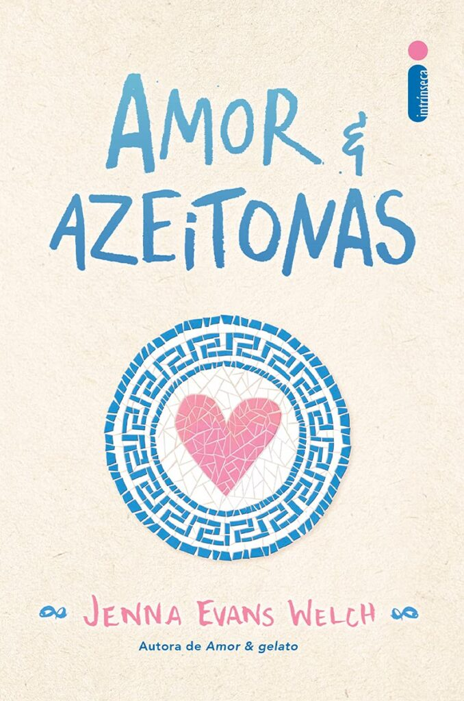
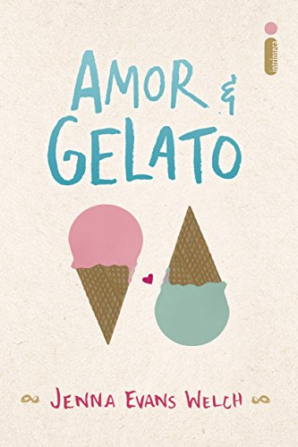

Amor e Azeitonas

"Amor & Azeitonas" é um romance juvenil de Jenna Evans Welch que acompanha Liv Varanakis, uma jovem que viaja para Santorini, na Grécia, para reencontrar seu pai ausente. Enquanto ele trabalha em um documentário sobre a lendária Atlântida, Liv precisa enfrentar memórias dolorosas e descobrir se pode perdoá-lo. No meio disso, ela conhece Theo, um garoto encantador que a ajuda a enxergar a ilha – e a vida – de uma nova maneira. Com uma narrativa envolvente, o livro aborda temas como família, autodescoberta e segundas chances, em meio a paisagens paradisíacas e uma pitada de romance.
R$ 49,90
Amor e Sorte

"Amor & Sorte" (Love & Luck) é um romance juvenil escrito por Jenna Evans Welch. A história acompanha Addie, uma jovem que viaja para a Irlanda para o casamento de sua tia, mas o que deveria ser uma viagem tranquila se transforma em uma grande aventura ao lado de seu irmão Ian. Os dois acabam embarcando em uma road trip inesperada pelo país, seguindo as dicas de um guia de viagem chamado "Coração Partido? Aqui está seu guia para a cura". No meio do caminho, Addie precisa lidar com um segredo do passado, enquanto sua relação com Ian é testada. No entanto, com a ajuda do misterioso Rowan, um novo amigo que se junta à jornada, ela descobre que o amor e a sorte podem estar onde menos esperamos. Com uma narrativa leve e cativante, o livro aborda temas como família, perdão e autodescoberta, ambientado em cenários deslumbrantes da Irlanda.
R$ 39,90
Amor e Gelato

"Amor & Gelato" (Love & Gelato) é um romance juvenil de Jenna Evans Welch que conta a história de Lina, uma jovem que viaja para a Itália após a morte de sua mãe. A viagem não é exatamente sua escolha, mas um desejo da mãe, que queria que ela conhecesse seu pai, um homem que Lina nunca viu antes. Ao chegar em Florença, Lina recebe um antigo diário de sua mãe, que revela segredos sobre o passado e um romance que ela viveu na cidade. Conforme segue as pistas deixadas no diário, Lina embarca em uma jornada de autodescoberta, amor e amizade, ao lado do carismático Ren, um garoto italiano que a ajuda a explorar os encantos da cidade. Com uma narrativa doce e envolvente, o livro mistura romance, mistério e belas paisagens da Itália, explorando temas como família, identidade e recomeços – tudo isso com muito gelato!
R$ 39,90